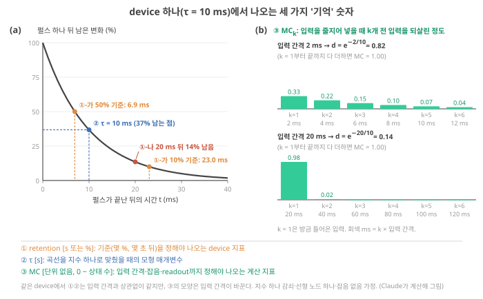
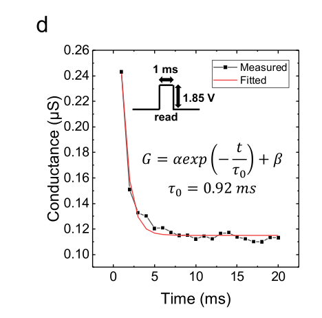
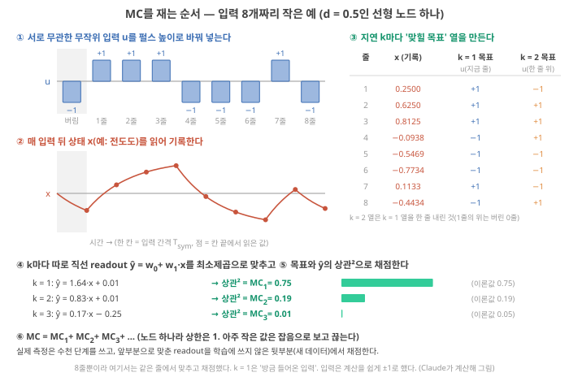
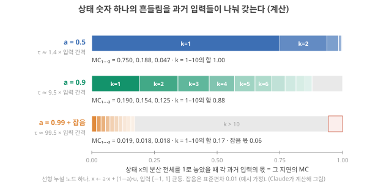

Day 23. 기억의 세 가지 양과 MC 손계산
Phase 3 · 좋은 시스템이란 무엇인가
이번 질문 retention, τ, memory capacity는 각각 무엇을 재고, 상태 숫자 하나에 과거는 어떻게 담기나?
왜 배우나 내 소재 retention·τ가 MC와 같은 말인지 가려야 좋은 reservoir로 오판하지 않는다.
오늘의 장면 감쇠 곡선 + 입력열 → retention·τ 읽기 → k개 전 입력 몫 계산 → τ [s]·MC_k [0–1]
오늘 반드시 retention·τ·MC는 서로 다른 양이다. 노드 하나의 MC 합은 d와 상관없이 1이고, d는 그 1을 나누는 방식만 바꾼다.
나중에 봐도 됨 표본 분산 (n−1) · 잡음 d = 0.99 계산 · Lee 2025 retention 표 · k 번호
이후 쓰이는 곳 Day 25–30 과제 기억·기준선 · Day 33–34 잡음 · Day 55–56 실험 계획
지난 학습 복습
지난 학습 단위(Day 22 · 실습 결과 읽기, 조건 바꾸기, 기준선 비교)의 핵심을 다른 예로 확인합니다. 고르는 즉시 맞았는지와 이유가 보입니다. 틀려도 아래 학습자료는 그대로 열려 있고, 틀린 문제에는 다시 볼 곳이 붙습니다.
사전 테스트 (선택)
사전 테스트 펼치기 · 배우기 전에 짐작해 보는 문제 (선택)
학습자료
Phase 3의 첫날입니다. Phase 2에서는 RC가 어떻게 작동하는지 봤습니다. Device의 상태가 최근 입력을 조금씩 품고 있고(fading memory), 그 상태에서 학습한 직선(readout)이 답을 꺼낸다는 것. Phase 3은 질문을 바꿉니다. 얼마나 잘 작동하는가, 그리고 그것을 무엇으로 재는가. 첫 주제는 "기억"입니다. Device 논문에서 가장 흔한 문장 중 하나가 "우리 device는 기억이 길다"인데, 오늘 끝에는 이 문장을 들으면 "어떤 기억을, 어떤 입력 간격에서, 무엇과 비교해 쟀나?"를 되물을 수 있게 됩니다.
이 주제의 질문 순서 — 이번 Day 23에서는 구간 1–2만 읽습니다. 나머지는 Day 24에서 이어집니다(구간 번호는 원래 한 묶음이던 순서 그대로입니다).
- Device 논문의 "기억"에는 무엇이 섞여 있나? Retention, 시간상수 τ, memory capacity는 각각 무엇을 센 값인가? → 구간 1
- Memory capacity(MC)는 상태 숫자 하나에 과거 입력이 어떻게 담기는지를 어떻게 보여 주나? (손으로 계산합니다) → 구간 2
- 감쇠가 10 ms인 device와 10 s인 device 중 어느 쪽이 좋은가? 무엇이 그 답을 정하나? (Day 24에서)
- Device(노드)를 여러 개 쓰면 기억도 그만큼 늘어나나? (Day 24에서)
- 그래서 "좋은 memory"란 무엇이고, 논문에서 무엇을 확인해야 하나? (Day 24에서)
1. 같은 '기억', 세 가지 양: retention, τ, memory capacity
끝나면 할 수 있는 것. retention time, 시간상수 τ, memory capacity가 각각 누가 무엇을 잰 값인지 말하고, 셋을 서로 바꿔 쓰면 왜 틀리는지 숫자 하나로 보일 수 있다.
상황. 이온 device에 전압 펄스를 한 번 주면 conductance(device 전체로 전류가 얼마나 잘 흐르는가, 컨덕턴스 \(G\) [S]. 재료 성질인 이온전도도 σ [S/m]와는 다른 양, Day 7의 Ohm·Kirchhoff 법칙)가 올라갔다가 서서히 원래로 돌아옵니다. 이 곡선을 보고 사람들은 세 가지 다른 말을 합니다. "이 device는 retention이 2초다", "이 device의 τ는 0.8초다", "이 device는 기억이 좋아서 RC에 쓸 만하다". 세 문장은 같은 곡선에서 나왔지만, 같은 것을 말하지 않습니다.
첫째는 정의에 따라 달라지는 측정 지표, 둘째는 곡선에 맞춘 모형의 숫자, 셋째는 계산 능력에 대한 주장입니다. 셋째를 뒷받침하려면 곡선 하나로는 부족하고, 다른 실험이 필요합니다. 이 구간이 그 차이를 device 하나의 그림(그림 1)으로 정리합니다.
먼저 앞에서 배운 세 가지를 다시 꺼냅니다. 시간상수 τ(time constant)는 입력이 바뀐 뒤 어떤 양이 새 평형값(입력이 끊기면 원래 값)에 다가가는 빠르기를 나타내는 시간의 척도입니다. 변화가 \(e^{-t/\tau}\) 꼴로 줄어들면 \(t = \tau\)에서 처음 변화의 약 37%가 남습니다(Day 5의 ‘leak과 남는 비율’). 남는 비율 \(d\)는 입력과 입력 사이의 간격 동안 변화가 몇 배로 남는지를 적은 숫자로, 간격이 \(\Delta t\)이면 \(d = e^{-\Delta t/\tau}\)입니다.
0.9라면 90%가 남고 10%가 줄어든다는 뜻이며, 같은 device라도 간격을 바꾸면 \(d\)가 바뀝니다(Day 15의 d와 τ·Δt). 오늘은 이 간격을 입력 간격 \(T_{\text{sym}}\)이라고 적습니다(Day 15–16의 \(\Delta t\)와 같은 것. 정확한 정의는 ‘시간척도 정합’ 구간). retention은 써 넣은 상태가 "얼마나 오래 남는가"를 재는 지표로, Day 7–8에서 같은 감쇠 곡선 하나가 정의에 따라 478 s, "10⁴ s 이상", "1년 뒤 30%"로 달리 적힐 수 있음을 봤습니다(Day 8의 retention 비교 그림).
무엇을 볼지. 그림 1은 τ = 10 ms인 device 하나에서 나오는 세 숫자를 한 장에 놓은 것입니다. (a)는 펄스를 한 번 준 뒤의 감쇠 곡선입니다(가로축: 펄스가 끝난 뒤의 시간 [ms], 세로축: 펄스가 만든 변화 가운데 아직 남은 몫 [%]). (b)는 같은 device에 서로 무관한 무작위 입력을 일정한 간격으로 줄지어 넣었을 때, 지금 상태로 \(k\)개 전 입력을 얼마나 되살리는지를 0–1 사이 숫자(\(MC_k\), 단위 없음)로 그린 막대입니다. \(k\) = 1은 방금 들어온 입력, \(k\) = 2는 그 하나 전입니다. (b)의 위와 아래 막대는 입력 간격만 다릅니다(2 ms, 20 ms).

그림 1을 번호 순서로. ① 주황 점 둘과 빨간 점: 같은 곡선인데 "50%가 남을 때까지"(\(\tau \ln 2\) = 6.9 ms), "10%가 남을 때까지"(\(\tau \ln 10\) = 23.0 ms), "20 ms 뒤 몇 %가 남았나"(\(e^{-20/10}\) = 14%)가 모두 retention이라고 불립니다. 앞의 둘은 시간 [ms], 셋째는 비율 [%]로 단위부터 다릅니다. ② 파란 점: τ = 10 ms는 측정 지표가 아니라 "이 곡선이 지수 하나를 따른다"는 모형을 받아들였을 때의 매개변수입니다. ③ 막대: 입력 간격이 2 ms면 한 간격 동안 \(d = e^{-2/10}\) = 0.82가 남아 여러 입력의 흔적이 겹치고, 20 ms면 \(d = e^{-20/10}\) = 0.14만 남아 방금 입력만 또렷합니다.
(a)의 ①·②는 입력 간격을 바꿔도 그대로인데, (b)의 ③은 달라집니다. 막대의 숫자를 계산하는 법은 ‘MC 손 계산’ 구간에서 손으로 해 봅니다(Day 15–16에서 본 노드 하나의 'memory budget'과 같은 계산).
Retention time과 memory capacity는 무엇이 다른가
① 왜 필요한가. "기억이 길다"는 말이 RC에 좋은 device라는 뜻이 되려면, 길게 남는 것이 과제에 필요한 과거 입력의 정보여야 하고, 그 정보를 readout이 실제로 꺼낼 수 있어야 합니다. Retention 곡선 하나는 이 두 가지를 보여 주지 않습니다. 그래서 세 양을 갈라 둡니다.
② 세 양의 정의.
| 양 | 누가, 무엇을 재나 | 단위 | 결정하는 것 |
|---|---|---|---|
| Retention | 펄스(또는 쓰기) 한 번 뒤 (가) 상태 변화가 정한 기준(예: 처음의 50%, 10%) 아래로 떨어질 때까지의 시간, 또는 (나) 정한 시간 뒤(예: 20 ms, 1 h) 남은 몫 | (가) s, (나) % | 측정 조건, 기준 %, 측정 기간 |
| 시간상수 τ | 그 감쇠 곡선을 \(e^{-t/\tau}\) 같은 모형으로 맞췄을 때의 매개변수 | s | 모형의 꼴(지수 하나? 여럿?), 맞춘 구간 |
| Memory capacity (MC) | 무작위 입력열을 일정한 간격으로 계속 넣으면서, 지금 상태로 \(k\)개 전 입력(\(k\) = 1이 방금 입력)을 학습한 선형 readout(상태에서 답을 꺼내는 직선 맞추기)으로 얼마나 되살리는지(\(MC_k\), 0–1)를 \(k\)마다 재서 더한 값 | 무차원(0 이상, 읽는 상태 숫자의 개수 이하) | Device의 동역학 + 입력 간격 + 잡음 + 상태 수 + readout |
③ 무엇이 어떤 순서로. retention과 τ는 입력 하나에 대한 반응만 봅니다. MC는 입력이 끊임없이 이어질 때, 새 입력이 옛 입력의 흔적을 덮어쓰는 상황에서 잽니다. Device 상태는 숫자 몇 개뿐이라, 새 입력이 들어올 자리를 내주면서 옛 정보는 다른 입력들과 섞이고 잡음에 묻힙니다. Retention은 "흔적이 남아 있나"를, MC는 "그 흔적을 다른 입력들과 구별해서 꺼낼 수 있나"를 묻습니다.
④ 작은 숫자로. τ = 10 ms인 device와 τ = 10 s인 device가 있고, 둘 다 감쇠가 정확히 지수 하나를 따른다고 합시다. "처음 변화의 50%가 남을 때까지"를 retention으로 정하면 \(\tau \ln 2\)이므로 6.93 ms와 6.93 s, "10%가 남을 때까지"로 정하면 \(\tau \ln 10\)이므로 23.0 ms와 23.0 s입니다. 같은 곡선인데 기준만 바꿔도 retention이 3.3배 달라집니다(\(\ln 10 / \ln 2 = 3.32\)). 감쇠가 지수 여러 개의 합이면(빠른 부분 + 느린 꼬리) τ도 하나로 정해지지 않고, 맞추는 구간에 따라 바뀝니다.
그리고 두 device의 MC는 이 숫자들만으로는 아예 정해지지 않습니다. 입력이 얼마나 자주 들어오는지(‘시간척도 정합’ 구간), 잡음이 얼마인지(‘MC 손 계산’ 구간), 상태가 몇 개인지(‘여러 노드’ 구간)가 빠져 있기 때문입니다. 앞의 device 하나 그림 (b)에서 같은 τ = 10 ms device의 막대 모양이 입력 간격만 바꿔도(2 ms → 20 ms) 달라진 것이 그 예입니다.
⑤ 이름과 정확한 뜻. retention time = 기준·조건이 붙은 device 지표. τ = 모형 매개변수. Memory capacity = 입력열·readout·잡음을 포함한 계의 계산 지표. 셋 중 MC만 "readout이 무엇을 꺼낼 수 있나"를 직접 잽니다.
⑥ 이온·RC와의 연결. 폴더의 이온 device 논문들은 대부분 ①·②를 보고합니다(펄스 뒤 감쇠 곡선, 그리고 두 펄스를 가까이 주면 둘째 응답이 커지는 PPF의 τ, Day 10의 PPF 곡선의 한계). ★ Singh 2026은 "천천히 감쇠하는 전기적·광학적·기계적·화학적 응답이 있다는 것만으로는 유용한 reservoir 기억이 확립되지 않는다. 계산에 중요한 질문은 앞선 입력의 정보가 지금의 reservoir 상태에서 접근 가능한가이다"라고 씁니다. Singh 2026, p.8 같은 글은 그래서 지연별 기억 곡선 전체(앞의 device 하나 그림 (b)처럼 \(MC_k\)를 \(k\)마다 막대로 그린 것)를 누적값과 함께 보고하라고 권합니다. "총 기억이 비슷한 reservoir라도 정보를 담는 시간 범위가 크게 다를 수 있기 때문"입니다. Singh 2026, p.13
⑦ 짧은 확인. "retention이 10배 긴 device는 MC도 10배 크다"가 왜 틀렸는지 한 줄로 말해 보세요. (답: retention은 입력 하나의 흔적이 남는 시간이고, MC는 이어지는 입력들 사이에서 그 흔적을 구별해 꺼내는 양이다. ‘MC 손 계산’·‘시간척도 정합’·‘여러 노드’ 구간에서 반례를 계산합니다.)
실제 측정 곡선 하나. 그림 1(a)(펄스 하나 뒤 감쇠)가 실제 device에서는 어떻게 생겼는지, ‘시간척도 정합’ 구간에서 다시 만날 Lee 2025(npj)의 그림으로 봅니다. 읽는 법: 검은 네모가 측정값, 빨간 선이 지수 모형을 맞춘 것이고, 그 모형의 매개변수가 τ0 = 0.92 ms입니다. 곡선이 0이 아니라 약 0.115 µS(식의 β)로 내려가 멈춘다는 점도 보세요. Retention을 "처음 변화의 50%"로 정하려면 무엇을 '처음 변화'로 볼지(β 위쪽만? Conductance 값 전체?)부터 정해야 합니다. 그림 아래 표가 그 차이를 계산합니다. 해석

같은 곡선, 다섯 가지 retention. 이 측정 곡선 하나에 앞 기초 상자의 정의들(기준 %를 정한 retention, 지수 모형의 τ)을 나란히 적용해 봅니다. 출발점은 첫 측정점(1 ms, 약 0.24 µS)이고, 곡선이 멈추는 값 β는 약 0.115 µS입니다(둘 다 그래프 눈금에서 읽은 값). Claude가 원문 그래프에서 읽음 "β 위쪽 변화"는 conductance에서 β를 뺀 높이, 곧 아직 사라지지 않은 변화입니다. 아래 표의 시간은 모두 출발점(1 ms 점)부터 잰 길이입니다. 장기 기억 device에서 같은 비교를 한 Day 8의 retention 비교 그림와 견주어 보세요.
| 정의 | 무엇이 어디까지 줄 때까지 | 이 곡선에서 | 그 값의 출처 |
|---|---|---|---|
| 1/e 시간 = τ | β 위쪽 변화가 처음의 37% | 0.92 ms | 논문이 지수 하나로 맞춘 모형값 |
| 반감 시간(50%) | β 위쪽 변화가 처음의 50% | 0.92 × ln 2 ≈ 0.64 ms | 모형에서 계산. 측정 간격(1 ms)보다 짧아 측정점으로는 직접 보이지 않음 |
| 10% 시간 | β 위쪽 변화가 처음의 10% | 0.92 × ln 10 ≈ 2.1 ms | 모형에서 계산 |
| 절대값 50% | Conductance 값 자체가 약 0.24 → 0.12 µS | 맞춘 곡선으로 약 2.7 ms, 측정점으로는 약 4–6 ms(5·6 ms 점이 약 0.12, 7 ms 점부터 분명히 아래) | 0.12가 β(0.115)에 너무 가까워 읽는 법에 따라 크게 흔들림 |
| 측정 창 | "측정하는 동안 남아 있었다" | "20 ms 동안 처음 값의 약 45% 이상(0.11 µS 이상) 유지" | 하한일 뿐, 감쇠 시간이 아님 |
같은 측정 곡선이 정의에 따라 0.64 ms에서 "20 ms 이상"까지 30배 넘게 다른 숫자가 됩니다. τ = 0.92 ms는 그중 한 정의(1/e)와 같을 뿐이고, "지수 하나"라는 모형을 받아들였을 때만 그 뜻을 가집니다. 그래서 논문에서 retention이나 τ를 옮겨 적을 때는 기준(몇 %, β 위쪽인가 값 전체인가), 출발점, 측정 간격, 측정 창을 함께 적어야 다른 device와 비교할 수 있습니다. [해석, 계산]
"retention time이 곧 기억 용량이다" — 자주 섞이는 두 개념입니다. Retention은 "흔적이 얼마나 오래 남나"이고 memory capacity는 "흔적을 다른 입력과 구별해서 몇 개나 꺼낼 수 있나"입니다. τ도 마찬가지로 모형의 매개변수일 뿐 지표가 아닙니다. Device 논문의 "long-term memory", "short-term memory"는 보통 retention 쪽 말이고, RC 논문의 "memory capacity"는 셋째 양입니다. 둘을 이어 주는 것은 오늘 ‘시간척도 정합’ 구간의 입력 간격입니다.
- Retention (retention time)
- 쓰기 한 번 뒤 상태 변화가 정한 기준(몇 %) 아래로 떨어질 때까지의 시간, 또는 정한 시간 뒤 남은 몫(%). 기준·조건·측정 기간에 따라 값이 바뀌는 device 지표.
- 시간상수 τ
- 감쇠 곡선을 지수 모형으로 맞췄을 때의 매개변수. 지수가 여럿이면 하나로 정해지지 않는다.
- Memory capacity (MC)
- 무작위 입력열에서 k개 전 입력을 학습한 선형 readout으로 되살린 정도(MCₖ, 0–1)를 k에 대해 더한 값. 상태 수를 넘지 못한다.
- 정의: retention(기준이 붙은 device 지표), τ(모형 매개변수), MC(입력열·readout·잡음을 포함한 계의 계산 지표)는 다른 양이다.
- 왜: retention·τ는 입력 하나의 흔적을, MC는 이어지는 입력들 속에서 그 흔적을 구별해 꺼내는 능력을 잰다.
- 그림 1: τ = 10 ms device 하나에서 retention은 기준에 따라 6.9 ms(50%), 23.0 ms(10%, 50% 기준의 3.3배), "20 ms 뒤 14%"이고, τ는 10 ms다. \(MC_k\)는 입력 간격 2 ms와 20 ms에서 모양이 다르다(합은 둘 다 1, 지수 모형·잡음 없음 계산).
- 측정 곡선에서: Lee 2025(npj)의 τ = 0.92 ms 곡선 하나도 정의에 따라 0.64 ms부터 "20 ms 이상"까지 다른 retention이 된다(그래프 읽기와 모형 계산). 기준·출발점·측정 간격·측정 창을 함께 적는다.
- 남은 질문: MC는 상태 숫자 하나에서 어떻게 계산되나? → ‘MC 손 계산’ 구간.
2. MC를 손으로: 상태 숫자 하나에 과거가 어떻게 담기나
끝나면 할 수 있는 것. 선형 leak 노드 하나의 \(MC_k\)를 "상태의 흔들림 가운데 k개 전 입력이 차지하는 몫"으로 직접 계산하고, 왜 노드 하나의 MC가 1을 넘지 못하는지, 잡음이 그 몫을 어떻게 갉아먹는지 말할 수 있다.
상황. 논문 표에 "MC = 3.2"라는 숫자 하나가 적혀 있습니다. 이 숫자는 device에서 어떻게 나왔을까요? 이 구간은 가장 작은 모형인 노드 하나로 그 숫자의 뜻을 손으로 계산하고, 실험에서 재는 순서와 잡음이 들어올 때를 봅니다. 노드 하나의 MC는 합이 1이라는 것 하나만 잡으면 나머지는 그 변형입니다.
Day 15–16·Day 19–20에서 이어서. Day 15–16의 ‘노드 하나의 memory budget’ 구간에서 노드 하나 \(x(t) = d\,x(t-1) + u(t)\)에 서로 무관한 난수 입력을 넣고, 지금 상태로 \(k\)단계 전 입력을 되살리는 정도(상관계수(correlation coefficient)의 제곱, corr²)를 쟀습니다. \(d\) = 0.5면 0.75, 0.19, 0.047, …이고 다 더하면 1이었습니다(Day 16의 노드 하나의 memory budget).
Day 19–20은 그 숫자 하나하나를 목표 하나의 '용량'이라 부르고, "그 입력이 노드의 흔들림에서 차지하는 몫"으로 읽었습니다(Day 19의 '용량 = 몫'). 그 숫자들이 바로 오늘의 \(MC_k\)입니다.
이 구간은 이 결과를 처음부터 다시 유도하지 않고 세 가지를 더합니다. (1) 왜 '몫'인지를 분산으로 한 번에 정리하고(아래 기초 상자, ‘d = 0.5 손 계산’ 절), (2) 그 숫자를 device 실험에서 어떤 순서로 재는지 보고(‘MC 측정 네 단계’ 절), (3) 측정 잡음이 끼면 무엇이 달라지는지 봅니다(‘잡음이 들어오면’ 절).
오늘 쓰는 노드의 식. 펄스 뒤 지수 감쇠하는 device를, 입력이 일정 간격으로 이어질 때의 모습으로 적은 가장 단순한 모형입니다. 이 교재는 이것을 선형 leak 노드(linear leaky node)라고 부릅니다. 'leak'은 입력이 없으면 상태가 스스로 원래 값 쪽으로 돌아간다(감쇠한다)는 뜻이고, '선형'은 상태가 입력에 비례해서만 움직인다(입력끼리 곱하거나 휘게 하지 않는다)는 뜻입니다. 입력 \(u\)가 들어올 때마다 상태 \(x\)가 다음처럼 바뀝니다.
\[ x_{\text{새}} = d\,x_{\text{이전}} + (1 - d)\,u \]
- 기호: \(d\)는 다음 입력이 올 때까지 남는 비율(0과 1 사이, 무차원)로 Day 15–16의 \(d\)와 같고, \(d = e^{-T_{\text{sym}}/\tau}\)입니다. \((1-d)\)는 새 입력이 상태를 움직이는 정도입니다.
- 계산 순서: 이전 상태에 \(d\)를 곱하고, 새 입력에 \((1-d)\)를 곱해 더한다.
- 왜 새 입력 쪽 계수가 \((1-d)\)인가: 입력 \(u\)를 한 간격 동안 걸어 둔다고 생각하면, 상태는 화공의 1차 이완처럼 \(u\)를 향해 다가갑니다(시간에 대한 변화율 \(dx/dt = (u - x)/\tau\), 평형값 \(u\)와의 차이가 \(e^{-t/\tau}\)로 줄어듦). 한 간격 뒤에는 그 차이가 \(d\)배로 남으므로 \(x_{\text{새}} = u + d\,(x_{\text{이전}} - u) = d\,x_{\text{이전}} + (1-d)\,u\)입니다. 그래서 τ가 길면(\(d \to 1\)) 한 간격 동안 \(u\) 쪽으로 조금밖에 못 갑니다(그 모습은 아래 ‘MC 측정 네 단계’ 그림의 점 사이 곡선에 나옵니다).
- Day 15–16의 식과의 관계: Day 15–16의 \(x(t+1) = d\,x(t) + u(t)\)는 짧은 펄스마다 일정한 양을 더하는 device의 식입니다. 두 식은 상태 전체에 곱한 배율 \((1-d)\)만 달라서, 잡음이 없으면 \(MC_k\)가 똑같습니다(배율을 곱해도 상관²은 그대로). 차이는 잡음이 있을 때 생깁니다(‘잡음이 들어오면’ 절). 또 Day 15–16의 ‘Spectral radius와 leak rate’ 구간의 leak 식에서 이웃 연결을 빼고(\(W = 0\)) 새 값을 입력 \(u\)로 두면 바로 이 식이 되고, 그때 leak rate는 \(1 - d\)입니다(leak).
- 결과의 뜻: 상태는 최근 입력들을 무게를 달리해 섞은 숫자입니다.
\(k\)를 어디서부터 세나. 오늘은 입력을 받은 직후 상태를 읽으므로 그 '방금 들어온 입력'을 \(k = 1\)로 셉니다(맨 앞 device 하나 그림의 막대와 같음). Day 15–16의 ‘노드 하나의 memory budget’ 구간과 Day 19–20은 같은 입력을 \(k = 0\)(지금 입력)으로 셌습니다. Day 21–22의 esn.py는 readout에 지금 입력 \(u(t)\)를 따로 넣어 주고 한 단계 전 \(u(t-1)\)부터 \(k = 1\)로 세므로, Day 21–22 출력의 \(MC_1\)은 오늘의 \(MC_2\)에 해당합니다. 계산 규칙은 같고 번호만 다릅니다. 논문의 \(MC_k\)를 비교할 때는 첫 지연을 어떻게 셌는지 확인합니다.
2-1. 노드 하나의 몫을 손으로: \(d\) = 0.5
구간 첫머리의 식 \(x_{\text{새}} = d\,x_{\text{이전}} + (1-d)\,u\)를 몇 번 펼쳐 보면 구조가 보입니다. 방금 입력을 \(u_1\), 그 전을 \(u_2\), 그 전을 \(u_3\) …이라고 부르면(아래첨자 = 몇 번째 전인가)
\[ x = (1-d)\left(u_1 + d\,u_2 + d^2 u_3 + d^3 u_4 + \cdots\right) \]
입니다. \(k\)번째 전 입력은 \(d^{k-1}\)배로 줄어든 채 들어 있습니다. 입력들은 서로 무관하므로, 위 기초 상자의 "몫"을 그대로 쓸 수 있습니다. \(d = 0.5\)를 넣은 결과를 먼저 표로 보고, 아래 단계에서 열 하나씩 따라갑니다.
| 입력 | 상태 속 계수 \((1-d)\,d^{k-1}\) | 그 항의 흔들림(첫 항 = 1로 놓은 상대값) \(d^{2(k-1)}\) | 몫 = \(MC_k\) |
|---|---|---|---|
| \(u_1\) (방금, \(k\) = 1) | 0.5 | 1 | 1 ÷ 1.333 = 0.750 |
| \(u_2\) (\(k\) = 2) | 0.25 | 0.25 | 0.25 ÷ 1.333 = 0.188 |
| \(u_3\) (\(k\) = 3) | 0.125 | 0.0625 | 0.0625 ÷ 1.333 = 0.047 |
| \(u_4\) (\(k\) = 4) | 0.0625 | 0.0156 | 0.012 |
| … | … | … | … |
| 합 | 1.333 | 1.000 |
단계 1 — 각 항의 흔들림(표의 셋째 열). \(u\)의 분산을 \(\sigma^2\)이라 하면, \(u_k\) 항의 분산은 (계수)² × \(\sigma^2\) = \((1-d)^2 d^{2(k-1)} \sigma^2\)입니다. 모든 항에 공통으로 붙은 \((1-d)^2\sigma^2\)은 몫을 구할 때(나눌 때) 지워지므로 빼고 적습니다. \(d = 0.5\)면 1, 0.25, 0.0625, 0.0156, …으로 매번 \(d^2 = 0.25\)배입니다.
단계 2 — 전체 흔들림. 다 더하면 \(1 + 0.25 + 0.0625 + \cdots = 1/(1 - 0.25) = 1.333\). (매번 0.25배씩 줄어드는 수들의 합입니다. 이런 합은 \(1 + r + r^2 + \cdots = 1/(1-r)\)로 끝이 정해지고(단 \(r\)이 1보다 작을 때), 여기서는 \(r = d^2 = 0.25\)입니다. 직접 더해 봐도 1 + 0.25 = 1.25, + 0.0625 = 1.3125, + 0.0156 = 1.328, …로 1.333에 다가갑니다.)
단계 3 — 몫 = \(MC_k\)(표의 넷째 열). \(MC_1 = 1/1.333 = 0.75\), \(MC_2 = 0.25/1.333 = 0.1875\), \(MC_3 = 0.0625/1.333 = 0.047\). 방금 입력은 상태 흔들림의 75%를 차지하므로 상태 하나로 75% 되살릴 수 있고, 2개 전 입력은 19%, 3개 전은 5%만 되살립니다. Day 16의 막대 그림의 \(d\) = 0.5 막대(0.75, 0.19, 0.047)와 같은 숫자입니다. Day 15–16는 방금 입력을 \(k\) = 0으로 셌을 뿐입니다.
단계 4 — 일반식. 같은 계산을 기호로 하면 \(MC_k = (1 - d^2)\,d^{2(k-1)}\). \(d = 0.5\)를 넣으면 \(0.75 \times 0.25^{k-1}\)로 위와 같습니다.
단계 5 — 합은 1. 모든 \(k\)에 대해 몫을 더하면 전체이므로 \(MC = MC_1 + MC_2 + \cdots = 1\). \(d\)가 무엇이든 노드 하나의 MC는 1입니다. \(d\)는 그 1을 어떻게 나눠 갖는지만 바꿉니다. 이것이 "MC는 읽는 상태 숫자의 개수를 넘지 못한다"(앞의 세 양 정의 표)는 말의 가장 작은 예입니다. 상태 숫자가 하나이므로 합이 1입니다.
\[ MC_k = (1 - d^2)\,d^{2(k-1)}, \qquad \sum_{k=1}^{\infty} MC_k = 1 \quad (\text{노드 하나, 잡음 없음}) \]
- 왜 지금 필요한가: τ가 길어지면(\(d \to 1\)) 기억이 "커지는" 것이 아니라 "퍼진다"는 것을 한 줄로 보여 준다.
- 단위: 무차원(0–1).
- 결과의 뜻: \(d\)가 작으면 몫이 최근 입력에 몰리고, \(d\)가 1에 가까우면 아주 먼 과거까지 고르게 퍼지되 각 몫은 작아진다.
\(d = 0.9\)면 \(MC_1 = 0.19\), \(MC_2 = 0.154\), \(MC_3 = 0.125\)로 천천히 줄어, \(k = 1\)–10을 다 더해도 0.88입니다. \(d = 0.5\)의 0.75보다 \(MC_1\)이 훨씬 작습니다. "τ가 길수록 좋다"면 \(d = 0.9\)가 이겨야 하지만, 방금 입력을 맞히는 과제라면 \(d = 0.5\)가 4배 가까이 낫습니다. 어느 쪽이 좋은가는 과제가 몇 개 전 입력을 필요로 하느냐에 달렸습니다(‘시간척도 정합’ 구간).
\(d = 0.8\)인 노드(잡음 없음)의 \(MC_1\)과 \(MC_2\)는 얼마일까요? 위 일반식에 넣어 먼저 계산하고 아래 점검으로 확인하세요. 첫 문제는 본문 숫자의 확인, 둘째는 일부가 채워져 있고, 셋째는 혼자 풉니다.
2-2. 실험에서는 어떻게 재나: 네 단계
왜 이런 절차가 필요한가. ‘d = 0.5 손 계산’ 절의 계산은 식을 알 때만 할 수 있습니다. 실제 device는 식을 모르므로, 측정한 상태로 직접 재야 합니다. ‘세 가지 기억’ 구간에서 셋 가운데 MC만이 "readout이 실제로 꺼낼 수 있는 과거"를 잰다고 했습니다. ★ 그것을 재려면 세 가지가 갖춰져야 합니다. (1) 과거 입력이 무엇이었는지 정확히 아는 정답지, (2) 그 정답을 다른 입력에서 짐작할 수 없게 만드는 입력(서로 무관한 무작위 숫자), (3) 학습한 readout이 처음 보는 데이터에서도 맞히는지 보는 채점. Day 21–22에서 tools/esn.py로 이미 돌린 절차를(memory capacity) 이번에는 device 실험의 말로, 무엇을 넣고·기록하고·맞추고·얻는지 순서대로 적습니다.
- 넣는 것 — 무작위 입력열. 난수나 동전 던지기로 숫자 \(u\)를 수천 개 만듭니다. 숫자끼리 서로 무관하고 같은 규칙에서 나와야 합니다(i.i.d., independent and identically distributed). ★ 그래야 "\(k\)개 전 입력"을 맞힌 것이 다른 입력에서 짐작한 것이 아니라 상태에 남은 흔적에서 꺼낸 것이 됩니다. 숫자 하나를 펄스 하나로 바꿔(예: \(u\)를 펄스 높이에 대응) 일정한 간격 \(T_{\text{sym}}\)으로 넣습니다. 숫자를 펄스로 바꾸는 규칙(부호화)과 간격은 결과를 바꾸므로 함께 보고합니다(‘시간척도 정합’·‘좋은 memory의 조건’ 구간).
- 기록하는 것 — 매 입력 뒤의 상태. 펄스마다 정해진 시점에 작은 읽기 전압으로 conductance(또는 전류)를 읽어 적습니다. 이것이 상태 \(x\)이고, 전극이나 virtual node(time multiplexing과 virtual node)가 여럿이면 한 번에 숫자 \(N\)개입니다. 처음 수십–수백 단계는 시작 상태의 흔적이 섞여 있어 버립니다(washout, 전처리).
- 맞추는 것 — 지연마다 따로 readout. 지연 \(k\)마다 정답 열 "\(k\)개 전 입력"을 만듭니다(입력 열을 \(k-1\)줄 아래로 밀어 놓은 것). 데이터 앞부분으로 직선 readout \(\hat{y} = w_0 + w_1 x_1 + \cdots + w_N x_N\)의 weight(숫자마다 붙은 "얼마나 중요하게 볼지"라는 수, weight)를 최소제곱·ridge 회귀로 정합니다(readout, ridge 회귀). \(k\)가 다르면 readout도 따로입니다.
- 나오는 숫자 — \(MC_k\)와 MC. 학습에 쓰지 않은 뒷부분 데이터에서 정답과 \(\hat{y}\)의 상관계수를 제곱한 것이 \(MC_k\)(0–1)입니다. Day 19–20에서 본 목표 하나의 "용량"과 같은 양입니다(Day 19의 용량과 상관²). \(k = 1, 2, \ldots, K\)에 대해 더한 것이 MC이고, 큰 \(k\)의 아주 작은 \(MC_k\)는 사실상 잡음이라 어디서 끊습니다 Stepney 2024, p.679. 최대 지연 \(K\)와 끊는 기준도 함께 보고합니다.
그림 2는 이 네 단계를 입력 8개짜리 작은 예로 끝까지 따라간 것입니다.

그림 2를 따라 계산해 보기. 노드는 ‘d = 0.5 손 계산’ 절과 같은 \(d = 0.5\)인 선형 leak 노드 하나이고, 입력이 올 때마다 \(x_{\text{새}} = 0.5\,x_{\text{이전}} + 0.5\,u\)입니다. 버린 0줄(\(x = -0.5\)) 다음은 \(0.5 \times (-0.5) + 0.5 \times 1 = 0.25\)(1줄), \(0.5 \times 0.25 + 0.5 \times 1 = 0.625\)(2줄), …입니다. 지연 \(k = 1\)의 readout은 \(x\) 열로 "지금 줄의 \(u\)"를 맞추는 직선이고, Day 19–20 단계 2의 최소제곱 계산(평균을 뺀 값끼리 곱한 합 ÷ \(x\) 쪽 제곱합)으로 기울기(직선이 \(x\) 한 칸에 오르는 양) \(w_1 = 1.64\)가 나옵니다.
정답과 출력의 상관²이 0.75이므로 \(MC_1 = 0.75\). 같은 일을 "한 줄 위의 \(u\)"에 하면 \(MC_2 = 0.19\), "두 줄 위"에 하면 \(MC_3 = 0.01\)입니다. 직선 readout의 출력은 \(x\)를 늘이고 옮긴 것일 뿐이라, 이 상관²은 \(x\)와 정답의 상관²과 같습니다.
세 숫자를 ‘d = 0.5 손 계산’ 절에서 식으로 구한 정확한 값(0.75, 0.19, 0.05)과 비교해 보세요. 앞의 둘이 잘 맞는 것은 이 예가 그렇게 나오는 입력열을 고른 것이기 때문입니다. 무작위로 뽑은 8개짜리 입력열 2만 개로 같은 계산을 하면, 가운데 80%의 열에서 \(MC_1\)은 0.72–0.87, \(MC_2\)는 0.01–0.50 사이로 흩어집니다. 계산 데이터가 적으면 우연히 맞아떨어진 상관이 점수에 섞이기 때문입니다(Day 19–20에서 IPC 원 논문이 문턱 아래의 작은 용량을 0으로 둔 것과 같은 문제). 그래서 실제로는 수천 단계를 쓰고(Day 21–22의 esn.py는 2,000단계로 맞춤), 맞추는 데이터와 채점하는 데이터를 나눕니다.
2-3. 잡음이 들어오면
실제 측정에는 잡음이 있습니다. 측정할 때마다 상태에 무관한 흔들림 \(n\)이 더해진다고 합시다. 그러면 전체 흔들림 = (입력들의 몫) + (잡음의 몫)이 되고, 잡음이 차지한 만큼 모든 \(MC_k\)가 줄어듭니다. 문제는 \(d\)가 1에 가까울 때입니다. 식 \(x_{\text{새}} = d\,x + (1-d)\,u\)에서 입력 하나가 상태를 움직이는 양이 \((1-d)\)로 작아지므로, 신호의 흔들림 자체가 작아지고 상대적으로 잡음이 커집니다.
숫자로 봅니다. 입력은 −1과 1 사이(분산 0.333), 잡음의 표준편차(흔들림의 전형적인 크기, 분산의 제곱근, 기초 상자)는 0.01(최대 진폭의 1%)로 둡니다. 이 잡음 크기는 예시 가정입니다. \(d = 0.99\)이면 상태(신호)의 분산은 ‘d = 0.5 손 계산’ 절 표의 합(단계 2)에 빼 두었던 공통 인자를 되살려 \(0.333 \times (1-d)^2/(1-d^2) = 0.333 \times 0.01/1.99 = 0.00168\), 표준편차는 그 제곱근 0.041로 잡음(0.01)의 4배밖에 안 됩니다. 분산으로 보면 잡음이 \(0.0001/(0.00168 + 0.0001) \approx 6\%\)를 차지합니다. 남은 94%는 수백 개 입력에 고르게 나뉘어 \(MC_1 = 0.019\), \(MC_2 = 0.018\), …이고, \(k = 1\)–10을 다 더해도 0.17입니다.
두 원인의 크기를 갈라 보면, 잡음이 없어도 \(d = 0.99\)의 최근 10개 합은 \(1 - 0.99^{20} = 0.18\)뿐입니다. 몫이 수백 개 입력에 퍼진 것이 주된 원인이고, 잡음은 여기서 6%를 더 가져가 0.17로 만듭니다. 잡음의 몫은 \(d\)가 1에 더 가까워질수록 빠르게 커져서, ‘시간척도 정합’ 구간의 \(d = 0.9998\)에서는 75%가 됩니다. 이 계산은 입력 하나가 상태를 \((1-d)\)만큼 움직이는 앞의 노드 식을 따른 것입니다. 펄스마다 일정한 양을 더하는 device(Day 15–16의 식)라면 신호가 줄지 않아 잡음 몫은 작지만, 퍼짐은 똑같이 일어납니다. 내 device가 어느 쪽에 가까운지는 펄스 하나가 바꾸는 양과 반복 잡음을 재 봐야 압니다(아래 생각해 보기). 그림 3이 세 경우를 막대 하나씩으로 보여 줍니다.

내 device의 펄스 응답에서 "신호의 흔들림"과 "측정 잡음"은 각각 얼마인가요? 같은 펄스를 열 번 주었을 때 응답이 얼마나 다른지(잡음)와, 펄스 하나가 conductance를 얼마나 바꾸는지(신호)를 적어 보세요. 신호가 잡음의 몇 배인지가 ‘잡음이 들어오면’ 절에서 본 "몫"의 출발점입니다. 펄스 하나의 변화가 아주 작은 대신 오래 남는 device라면 어떤 문제가 생길까요?
생각 정리 보기
- 신호 = 펄스 하나가 바꾸는 conductance 변화 ΔG, 잡음 = 같은 펄스를 열 번 줬을 때 응답이 흔들리는 폭(표준편차 σ). 둘을 같은 단위로 적고 ΔG ÷ σ를 구합니다.
- 예시 가정 해석: ΔG = 0.12 µS, σ = 0.01 µS이면 신호는 잡음의 12배.
- 이 비가 클수록 상태의 흔들림이 입력 쪽에 남고, 작을수록 잡음이 몫을 가져갑니다.
- 변화는 아주 작은데 오래 남는 device는 \(d\)가 1에 가까워 입력 하나의 흔적 \((1-d)\)이 작고 수백 개 입력에 퍼집니다. 긴 retention이어도 잡음에 묻혀 구별되는 기억이 거의 없을 수 있습니다.
- 분산 / 표준편차
- 평균에서 벗어난 양의 제곱의 평균 / 그 제곱근(흔들림의 전형적 크기). −1과 1 사이 고른 무작위 숫자의 분산은 1/3. 측정값 몇 개로 추정할 때는 n−1로 나누는 표본 분산·표본 표준편차가 기본.
- 상관² (상관계수의 제곱)
- 한 숫자에 상수를 곱해 다른 숫자를 맞힌 정도(0–1). 서로 무관한 항의 합에서는 그 항이 합의 분산에서 차지하는 몫과 같다.
- 선형 leak 노드
- x ← d·x + (1−d)·u. 남는 비율 d는 Day 15–16의 d와 같고 d = e의 지수 (−입력 간격/τ). 옛 입력은 d의 거듭제곱으로 줄어든다. (1−d)는 입력을 한 간격 동안 걸어 둘 때 상태가 그 값 쪽으로 가는 비율(Day 15–16 leak 식의 leak rate).
- i.i.d. 입력
- independent and identically distributed. 값끼리 서로 무관하고 같은 규칙에서 나온 입력. MC를 잴 때 쓰는 입력.
- Washout
- 시작 상태의 흔적이 남은 처음 수십–수백 단계를 버리는 것.
- 절차: i.i.d. 입력을 펄스로 넣고 → 입력마다 상태를 읽고 → 지연마다 readout을 맞추고 → 새 데이터에서 상관²(\(MC_k\))을 구해 더한다. 입력 8개짜리 예는 0.75, 0.19, 0.01(정확한 값 0.75, 0.19, 0.05). 데이터가 적으면 크게 흔들린다.
- 번호: 오늘의 \(k\) = 1(방금 입력) = Day 15–16·Day 19–20의 \(k\) = 0. Day 21–22
esn.py의 \(MC_1\)은 오늘의 \(MC_2\). 기호: 오늘의 남는 비율 \(d\)는 Day 15–16의 \(d\)와 같다(Day 43–44은 \(a\)로 적음). - 정의: 노드 하나의 \(MC_k\) = 상태의 흔들림에서 k개 전 입력이 차지하는 몫 = \((1-d^2)d^{2(k-1)}\).
- 왜: 상태가 숫자 하나뿐이라, 과거 입력들이 그 흔들림을 나눠 가질 수밖에 없다. 그래서 합은 1(= 상태 수)을 넘지 못한다.
- 숫자: \(d = 0.5\)이면 0.75, 0.19, 0.05, …. \(d = 0.99\)에 잡음(표준편차 0.01)을 넣으면 최근 10개의 합이 0.17(모형 계산, 잡음 크기는 예시 가정).
- 조건: 입력이 서로 무관하고 노드가 선형일 때의 정확한 계산이다. 비선형 노드는 몫의 일부를 "입력들의 곱" 같은 비선형 정보에 쓴다(뒤의 '비선형이 끼면' 문단, Day 19–20의 상충).
- 남은 질문: \(d\)를 정하는 것은 τ뿐인가? → ‘시간척도 정합’ 구간: τ와 입력 간격의 비.
학습 완료
이 학습 단위를 마쳤으면 눌러 주세요. 쓰기·영상·심화·추가 연습은 필요 없고, 퀴즈 점수와도 따로 기록됩니다. '완료'는 이 단위를 끝냈다는 표시이지 모든 내용을 완벽히 익혔다는 뜻이 아닙니다.